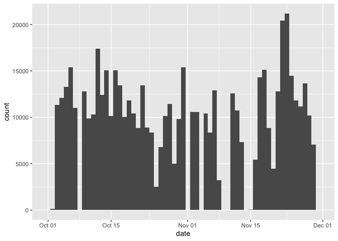
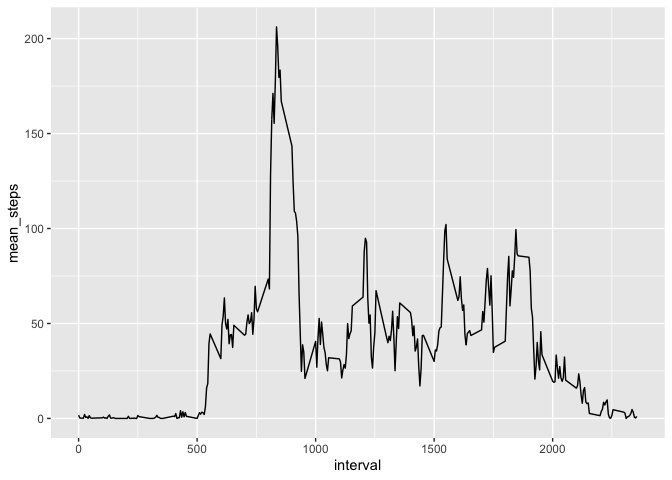
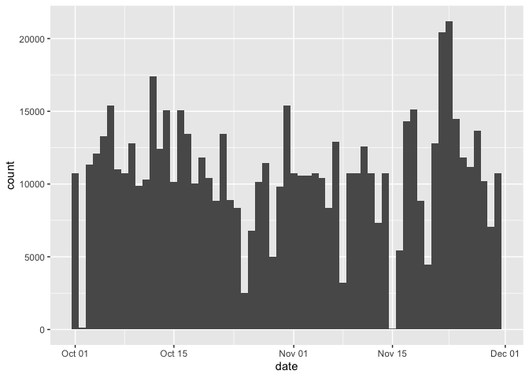
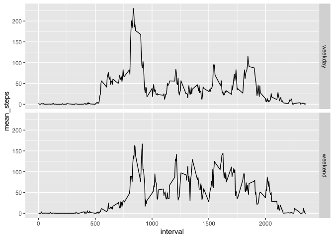

#Read in the data directly
df <- read.csv(unz("/Users/Ellie/Documents/Personal_development/Data_sciences_training/Coursera_data_science/github/RepData_PeerAssessment1/activity.zip","activity.csv"))df <- setDT(df)
#Calculate the total steps
df1 <- df[, total_step := sum(steps), by=date]
df2 <- unique(df1[, list(date, total_step)])
df2$date <- as.Date(df2$date)
a <- ggplot(df2) + geom_histogram(aes(x=date, weight=total_step),bins = 61) + scale_x_date()
a
#Compute mean and median
df1 <- df1[, mean_step := mean(steps,na.rm = TRUE), by=date]
#Data.table does not work for median somehow, use dplyr
df1 <- as_tibble(df1)
df1<- group_by(df1, date)
df1<- setDT(mutate(df1, median_step = median(steps,na.rm = TRUE)))
df3 <- unique(df1[, list(date, mean_step, median_step)])
#Report as a table
pander(df3,caption = "Mean and median of steps per each day")| date | mean_step | median_step |
|---|---|---|
| 2012-10-01 | NA | NA |
| 2012-10-02 | 0.4375 | 0 |
| 2012-10-03 | 39.42 | 0 |
| 2012-10-04 | 42.07 | 0 |
| 2012-10-05 | 46.16 | 0 |
| 2012-10-06 | 53.54 | 0 |
| 2012-10-07 | 38.25 | 0 |
| 2012-10-08 | NA | NA |
| 2012-10-09 | 44.48 | 0 |
| 2012-10-10 | 34.38 | 0 |
| 2012-10-11 | 35.78 | 0 |
| 2012-10-12 | 60.35 | 0 |
| 2012-10-13 | 43.15 | 0 |
| 2012-10-14 | 52.42 | 0 |
| 2012-10-15 | 35.2 | 0 |
| 2012-10-16 | 52.38 | 0 |
| 2012-10-17 | 46.71 | 0 |
| 2012-10-18 | 34.92 | 0 |
| 2012-10-19 | 41.07 | 0 |
| 2012-10-20 | 36.09 | 0 |
| 2012-10-21 | 30.63 | 0 |
| 2012-10-22 | 46.74 | 0 |
| 2012-10-23 | 30.97 | 0 |
| 2012-10-24 | 29.01 | 0 |
| 2012-10-25 | 8.653 | 0 |
| 2012-10-26 | 23.53 | 0 |
| 2012-10-27 | 35.14 | 0 |
| 2012-10-28 | 39.78 | 0 |
| 2012-10-29 | 17.42 | 0 |
| 2012-10-30 | 34.09 | 0 |
| 2012-10-31 | 53.52 | 0 |
| 2012-11-01 | NA | NA |
| 2012-11-02 | 36.81 | 0 |
| 2012-11-03 | 36.7 | 0 |
| 2012-11-04 | NA | NA |
| 2012-11-05 | 36.25 | 0 |
| 2012-11-06 | 28.94 | 0 |
| 2012-11-07 | 44.73 | 0 |
| 2012-11-08 | 11.18 | 0 |
| 2012-11-09 | NA | NA |
| 2012-11-10 | NA | NA |
| 2012-11-11 | 43.78 | 0 |
| 2012-11-12 | 37.38 | 0 |
| 2012-11-13 | 25.47 | 0 |
| 2012-11-14 | NA | NA |
| 2012-11-15 | 0.1424 | 0 |
| 2012-11-16 | 18.89 | 0 |
| 2012-11-17 | 49.79 | 0 |
| 2012-11-18 | 52.47 | 0 |
| 2012-11-19 | 30.7 | 0 |
| 2012-11-20 | 15.53 | 0 |
| 2012-11-21 | 44.4 | 0 |
| 2012-11-22 | 70.93 | 0 |
| 2012-11-23 | 73.59 | 0 |
| 2012-11-24 | 50.27 | 0 |
| 2012-11-25 | 41.09 | 0 |
| 2012-11-26 | 38.76 | 0 |
| 2012-11-27 | 47.38 | 0 |
| 2012-11-28 | 35.36 | 0 |
| 2012-11-29 | 24.47 | 0 |
| 2012-11-30 | NA | NA |
df1<- group_by(df1, interval)
df1<- setDT(mutate(df1, mean_step2 = mean(steps,na.rm = TRUE)))
df4 <- unique(df1[, list(interval, mean_step2)])
b <- ggplot(data = df4, aes(x=interval, y=mean_step2))+geom_line()+ylab("mean_steps")
b
df4 <- df4[order(mean_step2, decreasing = TRUE),]
pander(df4[1,], caption = "Interval with the max value of mean steps")| interval | mean_step2 |
|---|---|
| 835 | 206.2 |
#Impute 0 with mean value of that interval because there are all NAs on some dates
df5 <- df1[, replace_steps := ifelse(is.na(steps), mean_step2, steps)]
df5 <- df5[, list(date, interval, replace_steps)]
#For the new dataset
#Calculate the total steps
df6 <- df5[, total_step := sum(replace_steps), by=date]
df7 <- unique(df6[, list(date, total_step)])
df7$date <- as.Date(df7$date)
c <- ggplot(df7) + geom_histogram(aes(x=date, weight=total_step),bins = 61) + scale_x_date()
c
#Compute mean and median
df6 <- df6[, mean_step := mean(replace_steps,na.rm = TRUE), by=date]
#Data.table does not work for median somehow, use dplyr
df6 <- as_tibble(df6)
df6<- group_by(df6, date)
df6<- setDT(mutate(df6, median_step = median(replace_steps,na.rm = TRUE)))
df7 <- unique(df6[, list(date, mean_step, median_step)])
#Report as a table
pander(df7,caption = "Mean and median of steps per each day (imputed data)")| date | mean_step | median_step |
|---|---|---|
| 2012-10-01 | 37.38 | 34.11 |
| 2012-10-02 | 0.4375 | 0 |
| 2012-10-03 | 39.42 | 0 |
| 2012-10-04 | 42.07 | 0 |
| 2012-10-05 | 46.16 | 0 |
| 2012-10-06 | 53.54 | 0 |
| 2012-10-07 | 38.25 | 0 |
| 2012-10-08 | 37.38 | 34.11 |
| 2012-10-09 | 44.48 | 0 |
| 2012-10-10 | 34.38 | 0 |
| 2012-10-11 | 35.78 | 0 |
| 2012-10-12 | 60.35 | 0 |
| 2012-10-13 | 43.15 | 0 |
| 2012-10-14 | 52.42 | 0 |
| 2012-10-15 | 35.2 | 0 |
| 2012-10-16 | 52.38 | 0 |
| 2012-10-17 | 46.71 | 0 |
| 2012-10-18 | 34.92 | 0 |
| 2012-10-19 | 41.07 | 0 |
| 2012-10-20 | 36.09 | 0 |
| 2012-10-21 | 30.63 | 0 |
| 2012-10-22 | 46.74 | 0 |
| 2012-10-23 | 30.97 | 0 |
| 2012-10-24 | 29.01 | 0 |
| 2012-10-25 | 8.653 | 0 |
| 2012-10-26 | 23.53 | 0 |
| 2012-10-27 | 35.14 | 0 |
| 2012-10-28 | 39.78 | 0 |
| 2012-10-29 | 17.42 | 0 |
| 2012-10-30 | 34.09 | 0 |
| 2012-10-31 | 53.52 | 0 |
| 2012-11-01 | 37.38 | 34.11 |
| 2012-11-02 | 36.81 | 0 |
| 2012-11-03 | 36.7 | 0 |
| 2012-11-04 | 37.38 | 34.11 |
| 2012-11-05 | 36.25 | 0 |
| 2012-11-06 | 28.94 | 0 |
| 2012-11-07 | 44.73 | 0 |
| 2012-11-08 | 11.18 | 0 |
| 2012-11-09 | 37.38 | 34.11 |
| 2012-11-10 | 37.38 | 34.11 |
| 2012-11-11 | 43.78 | 0 |
| 2012-11-12 | 37.38 | 0 |
| 2012-11-13 | 25.47 | 0 |
| 2012-11-14 | 37.38 | 34.11 |
| 2012-11-15 | 0.1424 | 0 |
| 2012-11-16 | 18.89 | 0 |
| 2012-11-17 | 49.79 | 0 |
| 2012-11-18 | 52.47 | 0 |
| 2012-11-19 | 30.7 | 0 |
| 2012-11-20 | 15.53 | 0 |
| 2012-11-21 | 44.4 | 0 |
| 2012-11-22 | 70.93 | 0 |
| 2012-11-23 | 73.59 | 0 |
| 2012-11-24 | 50.27 | 0 |
| 2012-11-25 | 41.09 | 0 |
| 2012-11-26 | 38.76 | 0 |
| 2012-11-27 | 47.38 | 0 |
| 2012-11-28 | 35.36 | 0 |
| 2012-11-29 | 24.47 | 0 |
| 2012-11-30 | 37.38 | 34.11 |
There are 6912 NAs in the original dataset.
Imputing zero did not change the mean, median or total daily steps dramatically.
df5$date <- as.Date(df5$date)
df5 <- df5[, wd := weekdays(date)]
df5 <- df5[,days := ifelse(wd %in% c("Sunday","Saturday"), "weekend", "weekday")]
df5<- group_by(df5, interval,days)
df5<- setDT(mutate(df5, mean_step3 = mean(replace_steps,na.rm = TRUE)))
df8 <- unique(df5[, list(interval, mean_step3, days)])
d <- ggplot(data = df8, aes(x=interval, y=mean_step3))+geom_line()+ylab("mean_steps")+facet_grid(days ~.)
d